Metodologia de Superfície de Resposta
Introdução
- A metodologia de superfície de resposta (MSR) é aplicada quando o interesse é otimizar uma resposta influenciada por diversos fatores.
- Na maioria dos problemas a forma da relação da resposta com os fatores é desconhecida.
- A primeira parte da MSR é encontrar uma aproximação adequada para essa relação (geralmente através de polinômios de baixo grau).
- MSR é um procedimento sequencial.
- Quando estivermos em um ponto da superfície longe do ótimo, exietirá pouca curvatura, e um modleo de primeira ordem é adequado.
- O objetivo é chegar o mais próximo possível do ótimo.
- Uma vez que o ótimo tenha sido encontrado, uma análise mais elaborada, como um modelo de segunda ordem, pode ser empregada.
- Uma análise de MSR pode ser pensada como “subindo o morro”, onde o topo representa a resposta máxima.
- O método da ascendente de maior inclinação (steepest ascent) é utilizado para se determinar a direção de aumento máximo da resposta.
- Geralmente o caminho ascendente de maior inclinação é a linha que passa pelo centro da região de interesse e é perpendicular aos contornos da superfície ajustada.
- Por isso, as etapas ao longo do caminho são proporcionais aos coeficientes de regressão \(\beta_i\).
- Os experimentos são conduzidos ao longo do caminho ascendente de maior inclinação até que mais nenhum aumento seja observado na resposta.
Simulação de uma superficie
Aqui vamos gerar uma superfície teórica de um fenômeno. O ponto estácionário (nesse caso ponto de máxima) é em x1 = 8 e x2 = 8, e o valor da resposta no ponto estacionário é y = 10.
##----------------------------------------------------------------------
## Carregando pacotes e funções.
library(lattice)
library(latticeExtra)
# Loading required package: RColorBrewer
## Função para gerar a superfície com x1 = x2 = 8 e y = 10
superficie <- function(x1, x2) {
x1 <- x1 - 8
x2 <- x2 - 8
y <- 10 +
-0.02 * (x1^2) +
-0.02 * (x2^2) +
0.01 * x1 * x2
return(y)
}
## Para criar uma sequência de valores.
eseq <- function(x, n = 20) {
r <- extendrange(x)
s <- seq(r[1], r[2], length.out = n[1])
return(s)
}
## Para adicionar um erro aos valores simulados.
erro <- function(y, sd = 0.05) {
y <- y + rnorm(length(y), 0, sd = sd)
return(y)
}
## Visualizando a superfície teórica.
da <- expand.grid(x1 = seq(-1, 10, length.out = 20),
x2 = seq(-1, 10, length.out = 20))
da$y <- with(da, superficie(x1, x2))
levelplot(y ~ x1 + x2, data = da, contour = TRUE, aspect = "iso") +
layer(panel.abline(v = 8, h = 8, lty = 2))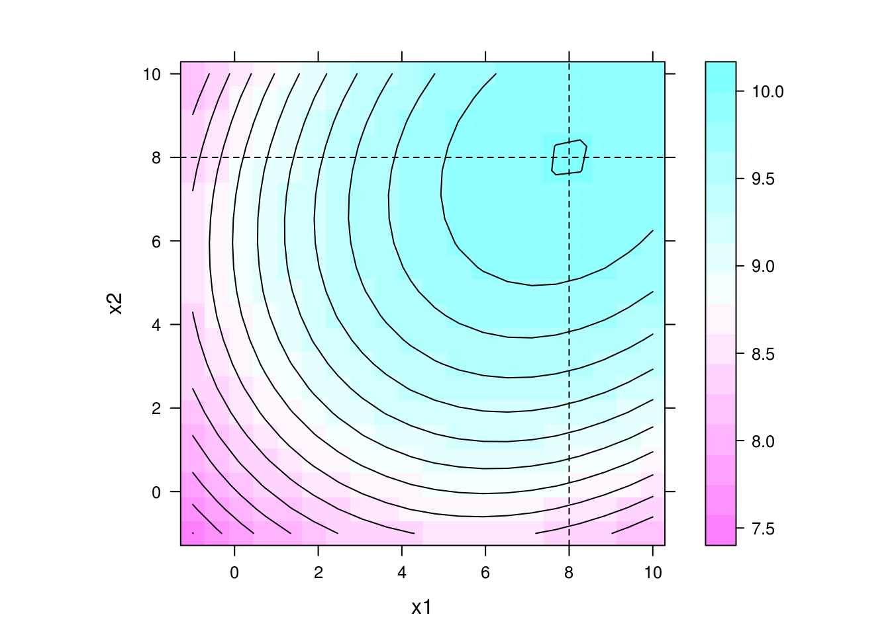
wireframe(y ~ x1 + x2, data = da, drape = TRUE)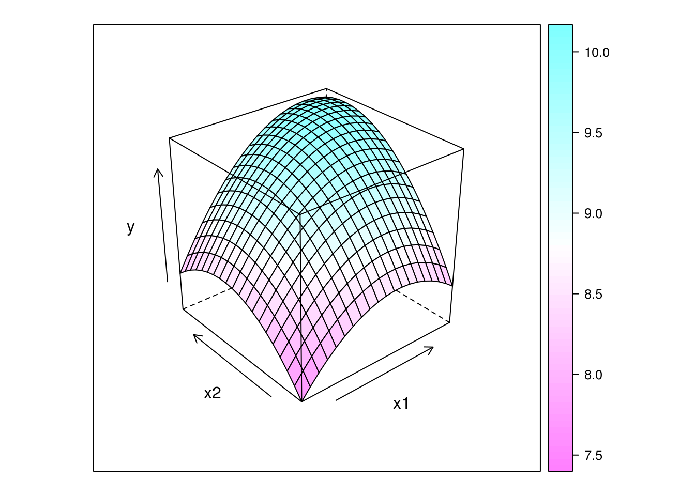
Experimento 1
Experimento fatorial \(2^2\) completo com adição de pontos centrais.
## Centro do experimento
ct1 <- c(0, 0)
## Pontos fatoriais
exp1 <- expand.grid(x1 = c(-1, 1),
x2 = c(-1, 1))
## Pontos centrais
exp1 <- rbind(exp1, matrix(ct1,
byrow = TRUE,
nrow = 4,
ncol = 2,
dimnames = list(NULL, names(exp1))))
## Classificando observações do centro para estimar efeito de curvatura
exp1$centro <- gl(n = 2, k = 4)
## Plano experimental
exp1
# x1 x2 centro
# 1 -1 -1 1
# 2 1 -1 1
# 3 -1 1 1
# 4 1 1 1
# 5 0 0 2
# 6 0 0 2
# 7 0 0 2
# 8 0 0 2
## Simulando valores da resposta.
set.seed(123)
exp1$y <- with(exp1, erro(superficie(x1, x2)))
## Ajustando o modelo
m1 <- lm(y ~ x1 * x2 + centro, data = exp1)
anova(m1)
# Analysis of Variance Table
#
# Response: y
# Df Sum Sq Mean Sq F value Pr(>F)
# x1 1 0.203448 0.203448 54.2471 0.005174 **
# x2 1 0.292137 0.292137 77.8948 0.003065 **
# centro 1 0.003616 0.003616 0.9642 0.398547
# x1:x2 1 0.000648 0.000648 0.1729 0.705524
# Residuals 3 0.011251 0.003750
# ---
# Signif. codes: 0 '***' 0.001 '**' 0.01 '*' 0.05 '.' 0.1 ' ' 1
## Reduzindo o modelo
m1 <- lm(y ~ x1 + x2, data = exp1)
anova(m1)
# Analysis of Variance Table
#
# Response: y
# Df Sum Sq Mean Sq F value Pr(>F)
# x1 1 0.203448 0.203448 65.563 0.0004658 ***
# x2 1 0.292137 0.292137 94.143 0.0001975 ***
# Residuals 5 0.015516 0.003103
# ---
# Signif. codes: 0 '***' 0.001 '**' 0.01 '*' 0.05 '.' 0.1 ' ' 1
## Estimativas dos coeficientes.
summary(m1)
#
# Call:
# lm(formula = y ~ x1 + x2, data = exp1)
#
# Residuals:
# 1 2 3 4 5 6 7
# -0.033992 -0.008529 -0.008529 -0.033992 0.014722 0.094011 0.031303
# 8
# -0.054995
#
# Coefficients:
# Estimate Std. Error t value Pr(>|t|)
# (Intercept) 8.07174 0.01969 409.840 1.64e-12 ***
# x1 0.22553 0.02785 8.097 0.000466 ***
# x2 0.27025 0.02785 9.703 0.000198 ***
# ---
# Signif. codes: 0 '***' 0.001 '**' 0.01 '*' 0.05 '.' 0.1 ' ' 1
#
# Residual standard error: 0.05571 on 5 degrees of freedom
# Multiple R-squared: 0.9696, Adjusted R-squared: 0.9575
# F-statistic: 79.85 on 2 and 5 DF, p-value: 0.0001606
## Efeitos de x1 e x2 para obter a direção do próximo plano.
(b1 <- coef(m1)[-1])
# x1 x2
# 0.2255262 0.2702484
## Predição
pred <- with(exp1,
expand.grid(x1 = eseq(x1),
x2 = eseq(x2)))
pred$y <- predict(m1, newdata = pred)
## Gráficos de predição
wireframe(y ~ x1 + x2, data = pred, drape = TRUE)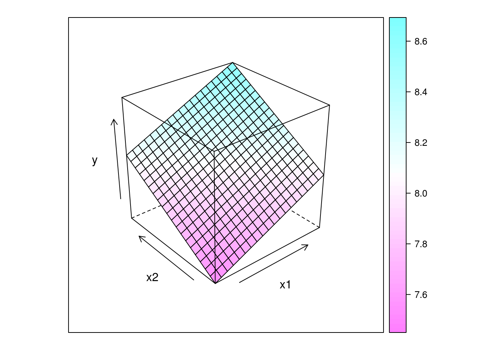
levelplot(y ~ x1 + x2, data = pred, contour = TRUE, aspect = "iso")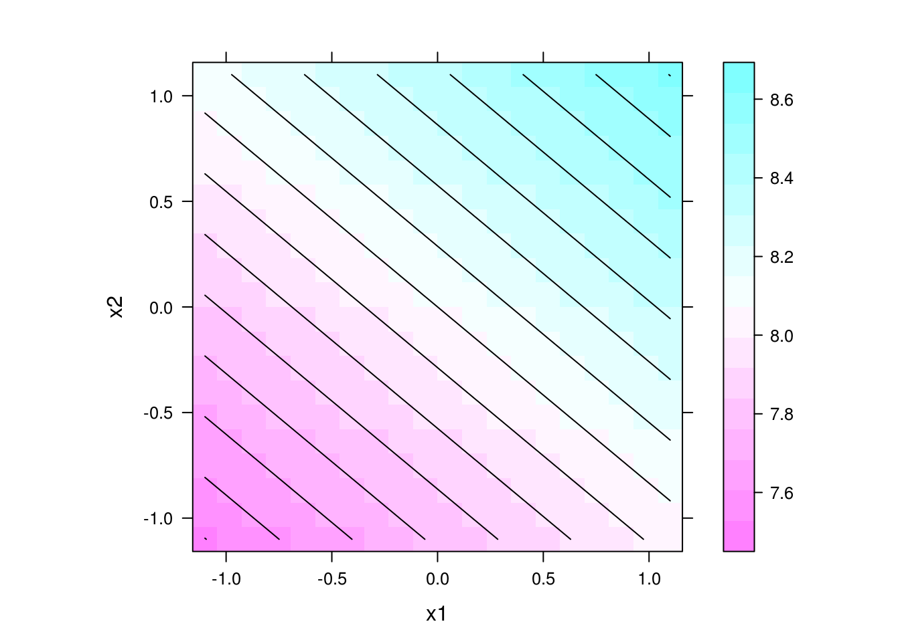
## Gráfico de predição com direção de maior inclinação
levelplot(y ~ x1 + x2, data = pred, contour = TRUE, aspect = "iso") +
layer(panel.arrows(ct1[1],
ct1[2],
ct1[1] + b1[1],
ct1[2] + b1[2],
length = 0.1)) +
layer(panel.abline(h = 0, v = 0, lty = 2))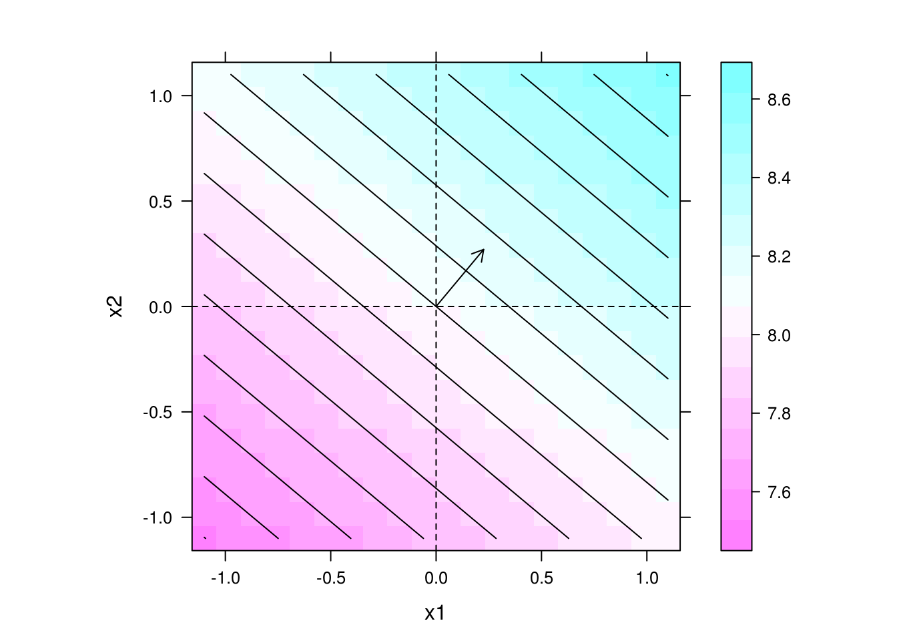
## Direção de maior inclinação
b1[2]/b1[1]
# x2
# 1.198301Experimento 2
O próximo passo é realizar um novo experimento, com novos valores de x1 e x2, guiado pela direção de maior inclinação. A direção nós já determinamos, o que falta agora é saber qualo tamanho do passo que queremos dar. Normalmente, o tamanho do passo é determinado pelo experimentador, com base em experiências anteriores, conveniência para gerar os tratamentos ou simplesmente avançando à uma taxa proporcional à direção de maior inclinação. Aqui, por exempo, vamos considerar 10 vezes a taxa da direção de maior inclinação.
## Gráfico da superfície com direção de maior inclinação multiplicada
## por um fator 10
levelplot(y ~ x1 + x2, data = da, contour = TRUE, aspect = "iso") +
layer(panel.levelplot(x = pred$x1, y = pred$x2, z = pred$y,
subscripts = 1:length(pred$x1),
contour = TRUE,
col.regions = grey.colors)) +
layer(panel.rect(min(x1), min(x2), max(x1), max(x2)),
data = exp1) +
layer(panel.arrows(ct1[1],
ct1[2],
ct1[1] + 10 * b1[1],
ct1[2] + 10 * b1[2],
length = 0.1))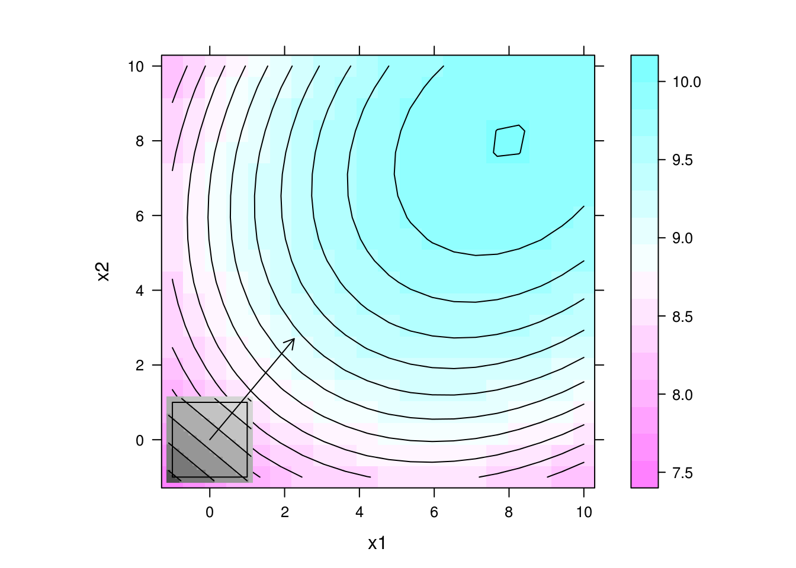
## O centro do novo plano experimental é então a ponta da seta
(ct2 <- 10 * b1)
# x1 x2
# 2.255262 2.702484
## Plano experimental centrado no novo ponto
exp2 <- expand.grid(x1 = ct2[1] + c(-1, 1),
x2 = ct2[2] + c(-1, 1))
exp2 <- rbind(exp2, matrix(ct2,
byrow = TRUE,
nrow = 4,
ncol = 2,
dimnames = list(NULL, names(exp2))))
exp2$centro <- gl(n = 2, k = 4)
## Resposta observada
set.seed(234)
exp2$y <- with(exp2, erro(superficie(x1, x2)))
exp2
# x1 x2 centro y
# 1 1.255262 1.702484 1 8.754785
# 2 3.255262 1.702484 1 8.952727
# 3 1.255262 3.702484 1 8.935693
# 4 3.255262 3.702484 1 9.457844
# 5 2.255262 2.702484 2 9.155972
# 6 2.255262 2.702484 2 9.090022
# 7 2.255262 2.702484 2 9.093474
# 8 2.255262 2.702484 2 8.931210
## Na prática, as variáveis x1 e x2 devem ser codificadas como (-1, 0,
## 1) para ajustar o modelo. Aqui vamos manter essa escala original para
## efeitos de ilustração do processo.
transform(exp2,
x1 = x1 - mean(x1),
x2 = x2 - mean(x2))
# x1 x2 centro y
# 1 -1 -1 1 8.754785
# 2 1 -1 1 8.952727
# 3 -1 1 1 8.935693
# 4 1 1 1 9.457844
# 5 0 0 2 9.155972
# 6 0 0 2 9.090022
# 7 0 0 2 9.093474
# 8 0 0 2 8.931210
## Ajuste do modelo
m2 <- lm(y ~ x1 * x2 + centro, data = exp2)
anova(m2)
# Analysis of Variance Table
#
# Response: y
# Df Sum Sq Mean Sq F value Pr(>F)
# x1 1 0.129633 0.129633 14.0988 0.03301 *
# x2 1 0.117658 0.117658 12.7963 0.03736 *
# centro 1 0.003597 0.003597 0.3912 0.57603
# x1:x2 1 0.026278 0.026278 2.8580 0.18950
# Residuals 3 0.027584 0.009195
# ---
# Signif. codes: 0 '***' 0.001 '**' 0.01 '*' 0.05 '.' 0.1 ' ' 1
## Ajuste do modelo reduzido
m2 <- lm(y ~ x1 + x2, data = exp2)
anova(m2)
# Analysis of Variance Table
#
# Response: y
# Df Sum Sq Mean Sq F value Pr(>F)
# x1 1 0.129633 0.129633 11.281 0.02014 *
# x2 1 0.117658 0.117658 10.239 0.02400 *
# Residuals 5 0.057459 0.011492
# ---
# Signif. codes: 0 '***' 0.001 '**' 0.01 '*' 0.05 '.' 0.1 ' ' 1
## Estimativas dos efeitos
summary(m2)
#
# Call:
# lm(formula = y ~ x1 + x2, data = exp2)
#
# Residuals:
# 1 2 3 4 5 6 7 8
# 0.05985 -0.10226 -0.10226 0.05985 0.10951 0.04356 0.04701 -0.11526
#
# Coefficients:
# Estimate Std. Error t value Pr(>|t|)
# (Intercept) 8.1770 0.1924 42.492 1.36e-07 ***
# x1 0.1800 0.0536 3.359 0.0201 *
# x2 0.1715 0.0536 3.200 0.0240 *
# ---
# Signif. codes: 0 '***' 0.001 '**' 0.01 '*' 0.05 '.' 0.1 ' ' 1
#
# Residual standard error: 0.1072 on 5 degrees of freedom
# Multiple R-squared: 0.8115, Adjusted R-squared: 0.736
# F-statistic: 10.76 on 2 and 5 DF, p-value: 0.01544
## Efeitos de x1 e x2
(b2 <- coef(m2)[-1])
# x1 x2
# 0.1800229 0.1715063
## Predição
pred <- with(exp2,
expand.grid(x1 = eseq(x1),
x2 = eseq(x2)))
pred$y <- predict(m2, newdata = pred)
## Gráfico da predição com direção de maior inclinação
levelplot(y ~ x1 + x2, data = pred, contour = TRUE, aspect = "iso") +
layer(panel.arrows(ct2[1],
ct2[2],
ct2[1] + b2[1],
ct2[2] + b2[2],
length = 0.1)) +
layer(panel.abline(h = ct2[2], v = ct2[1], lty = 2))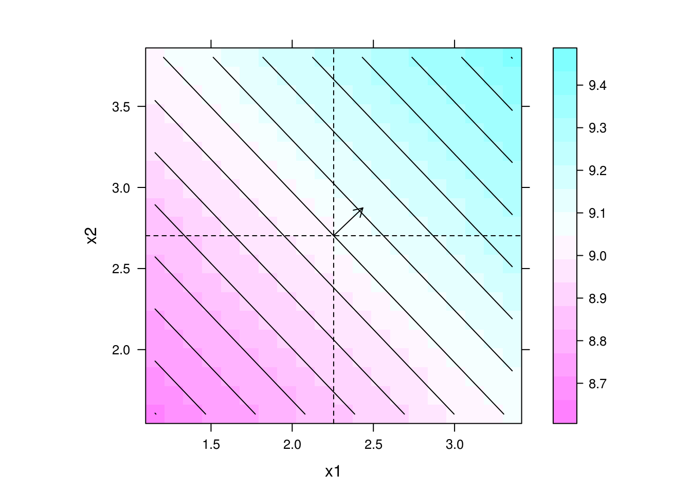
## Direção de maior inclinação
b2[2]/b2[1]
# x2
# 0.9526913
## Gráfico da superfície com direção de maior inclinação multiplicada
## por um fator 10 a partir do centro do experimento 2
levelplot(y ~ x1 + x2, data = da, contour = TRUE, aspect = "iso") +
layer(panel.levelplot(x = pred$x1, y = pred$x2, z = pred$y,
subscripts = 1:length(pred$x1),
contour = TRUE,
col.regions = grey.colors)) +
layer(panel.rect(min(x1), min(x2), max(x1), max(x2)),
data = exp2) +
layer(panel.arrows(ct2[1],
ct2[2],
ct2[1] + 10 * b2[1],
ct2[2] + 10 * b2[2],
length = 0.1)) +
layer(panel.rect(min(x1), min(x2), max(x1), max(x2)),
data = exp1) +
layer(panel.arrows(ct1[1],
ct1[2],
ct1[1] + 10 * b1[1],
ct1[2] + 10 * b1[2],
length = 0.1))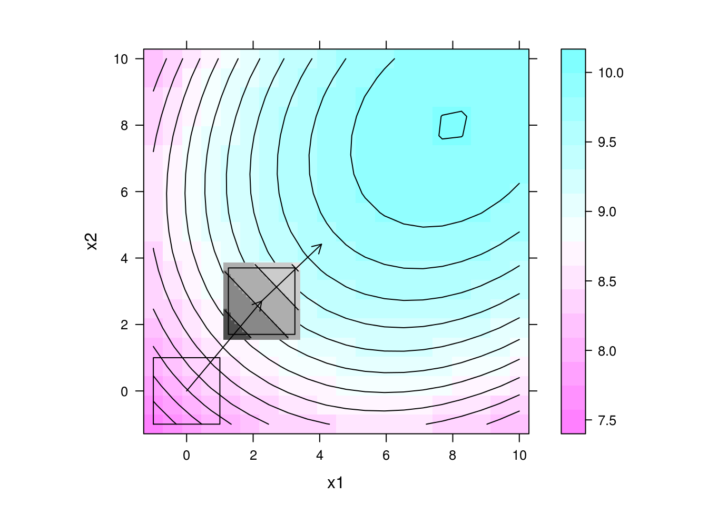
Experimento 3
Continuamos com um novo experimento, dando mais um passo de fator 10 na direção de maior inclinação.
## Centro do novo plano
(ct3 <- ct2 + 10 * b2)
# x1 x2
# 4.055492 4.417547
## Novo plano experimental
exp3 <- expand.grid(x1 = ct3[1] + c(-1, 1),
x2 = ct3[2] + c(-1, 1))
exp3 <- rbind(exp3, matrix(ct3,
byrow = TRUE,
nrow = 4,
ncol = 2,
dimnames = list(NULL, names(exp3))))
exp3$centro <- gl(n = 2, k = 4)
## Obtendo a resposta.
set.seed(234)
exp3$y <- with(exp3, erro(superficie(x1, x2)))
exp3
# x1 x2 centro y
# 1 3.055492 3.417547 1 9.350677
# 2 5.055492 3.417547 1 9.438901
# 3 3.055492 5.417547 1 9.430385
# 4 5.055492 5.417547 1 9.842818
# 5 4.055492 4.417547 2 9.646405
# 6 4.055492 4.417547 2 9.580455
# 7 4.055492 4.417547 2 9.583907
# 8 4.055492 4.417547 2 9.421643
## Ajuste do modelo
m3 <- lm(y ~ x1 * x2 + centro, data = exp3)
anova(m3)
# Analysis of Variance Table
#
# Response: y
# Df Sum Sq Mean Sq F value Pr(>F)
# x1 1 0.062664 0.062664 6.8153 0.07964 .
# x2 1 0.058473 0.058473 6.3595 0.08604 .
# centro 1 0.003597 0.003597 0.3912 0.57603
# x1:x2 1 0.026278 0.026278 2.8580 0.18950
# Residuals 3 0.027584 0.009195
# ---
# Signif. codes: 0 '***' 0.001 '**' 0.01 '*' 0.05 '.' 0.1 ' ' 1
## Ajuste do modelo reduzido
m3 <- lm(y ~ x1 + x2, data = exp3)
anova(m3)
# Analysis of Variance Table
#
# Response: y
# Df Sum Sq Mean Sq F value Pr(>F)
# x1 1 0.062664 0.062664 5.4530 0.06678 .
# x2 1 0.058473 0.058473 5.0883 0.07375 .
# Residuals 5 0.057459 0.011492
# ---
# Signif. codes: 0 '***' 0.001 '**' 0.01 '*' 0.05 '.' 0.1 ' ' 1
## Estimativas dos efeitos.
summary(m3)
#
# Call:
# lm(formula = y ~ x1 + x2, data = exp3)
#
# Residuals:
# 1 2 3 4 5 6 7 8
# 0.05985 -0.10226 -0.10226 0.05985 0.10951 0.04356 0.04701 -0.11526
#
# Coefficients:
# Estimate Std. Error t value Pr(>|t|)
# (Intercept) 8.4952 0.3236 26.248 1.5e-06 ***
# x1 0.1252 0.0536 2.335 0.0668 .
# x2 0.1209 0.0536 2.256 0.0737 .
# ---
# Signif. codes: 0 '***' 0.001 '**' 0.01 '*' 0.05 '.' 0.1 ' ' 1
#
# Residual standard error: 0.1072 on 5 degrees of freedom
# Multiple R-squared: 0.6783, Adjusted R-squared: 0.5496
# F-statistic: 5.271 on 2 and 5 DF, p-value: 0.05871NOTE que x1 e x2 não foram significativos (à 5%) nesse experimento e isso já é um indicativo de proximidade da região estacionária.
## Efeitos de x1 e x2.
(b3 <- coef(m3)[-1])
# x1 x2
# 0.1251644 0.1209061
## Predição
pred <- with(exp3,
expand.grid(x1 = eseq(x1),
x2 = eseq(x2)))
pred$y <- predict(m3, newdata = pred)
## Gráfico da predição com direção de maior inclinação
levelplot(y ~ x1 + x2, data = pred, contour = TRUE, aspect = "iso") +
layer(panel.arrows(ct3[1],
ct3[2],
ct3[1] + b3[1],
ct3[2] + b3[2],
length = 0.1)) +
layer(panel.abline(h = ct3[2], v = ct3[1], lty = 2))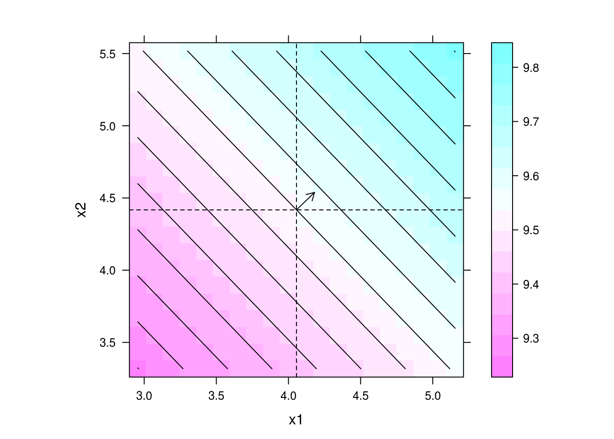
## Direção de maior inclinação
b3[2]/b3[1]
# x2
# 0.9659781
## Gráfico da superfície com direção de maior inclinação multiplicada
## por um fator 10 a partir do centro do experimento 3
levelplot(y ~ x1 + x2, data = da, contour = TRUE, aspect = "iso") +
layer(panel.levelplot(x = pred$x1, y = pred$x2, z = pred$y,
subscripts = 1:length(pred$x1),
contour = TRUE,
col.regions = grey.colors)) +
layer(panel.rect(min(x1), min(x2), max(x1), max(x2)),
data = exp3) +
layer(panel.arrows(ct3[1],
ct3[2],
ct3[1] + 10 * b3[1],
ct3[2] + 10 * b3[2],
length = 0.1)) +
layer(panel.rect(min(x1), min(x2), max(x1), max(x2)),
data = exp2) +
layer(panel.arrows(ct2[1],
ct2[2],
ct2[1] + 10 * b2[1],
ct2[2] + 10 * b2[2],
length = 0.1)) +
layer(panel.rect(min(x1), min(x2), max(x1), max(x2)),
data = exp1) +
layer(panel.arrows(ct1[1],
ct1[2],
ct1[1] + 10 * b1[1],
ct1[2] + 10 * b1[2],
length = 0.1))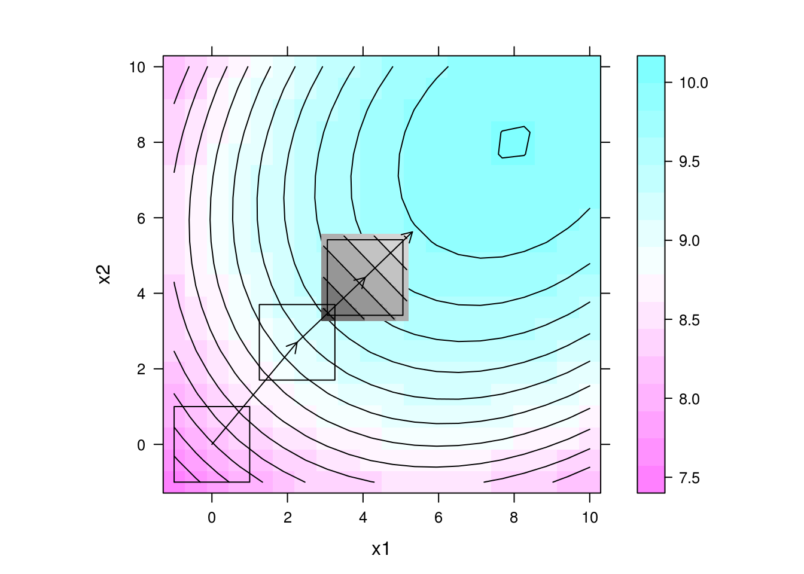
Experimento 4
## Centro do novo plano
(ct4 <- ct3 + 10 * b3)
# x1 x2
# 5.307135 5.626607
## Novo plano experimental
exp4 <- expand.grid(x1 = ct4[1] + c(-1, 1),
x2 = ct4[2] + c(-1, 1))
exp4 <- rbind(exp4, matrix(ct4,
byrow = TRUE,
nrow = 4,
ncol = 2,
dimnames = list(NULL, names(exp4))))
exp4$centro <- gl(n = 2, k = 4)
## Obtendo a resposta.
set.seed(456)
exp4$y <- with(exp4, erro(superficie(x1, x2)))
exp4
# x1 x2 centro y
# 1 4.307135 4.626607 1 9.557058
# 2 6.307135 4.626607 1 9.803284
# 3 4.307135 6.626607 1 9.780292
# 4 6.307135 6.626607 1 9.858765
# 5 5.307135 5.626607 2 9.770504
# 6 5.307135 5.626607 2 9.790019
# 7 5.307135 5.626607 2 9.840754
# 8 5.307135 5.626607 2 9.818749
## Ajuste do modelo
m4 <- lm(y ~ x1 * x2 + centro, data = exp4)
anova(m4)
# Analysis of Variance Table
#
# Response: y
# Df Sum Sq Mean Sq F value Pr(>F)
# x1 1 0.0263574 0.0263574 27.4385 0.01354 *
# x2 1 0.0194205 0.0194205 20.2170 0.02054 *
# centro 1 0.0060845 0.0060845 6.3341 0.08642 .
# x1:x2 1 0.0070353 0.0070353 7.3238 0.07340 .
# Residuals 3 0.0028818 0.0009606
# ---
# Signif. codes: 0 '***' 0.001 '**' 0.01 '*' 0.05 '.' 0.1 ' ' 1NOTE que aqui já existe falta de ajuste, o que indica fortemente que estamos próximos de região de ótimo (estacionária).
## Estimativas dos efeitos
summary(m4)
#
# Call:
# lm(formula = y ~ x1 * x2 + centro, data = exp4)
#
# Residuals:
# 1 2 3 4 5 6
# 8.674e-19 1.311e-18 2.149e-18 -8.720e-19 -3.450e-02 -1.499e-02
# 7 8
# 3.575e-02 1.374e-02
#
# Coefficients:
# Estimate Std. Error t value Pr(>|t|)
# (Intercept) 7.67466 0.47827 16.047 0.000526 ***
# x1 0.31715 0.08856 3.581 0.037257 *
# x2 0.29225 0.08369 3.492 0.039708 *
# centro2 0.05516 0.02192 2.517 0.086422 .
# x1:x2 -0.04194 0.01550 -2.706 0.073396 .
# ---
# Signif. codes: 0 '***' 0.001 '**' 0.01 '*' 0.05 '.' 0.1 ' ' 1
#
# Residual standard error: 0.03099 on 3 degrees of freedom
# Multiple R-squared: 0.9534, Adjusted R-squared: 0.8912
# F-statistic: 15.33 on 4 and 3 DF, p-value: 0.02448
## Efeitos de x1 e x2
(b4 <- coef(m4)[-c(1,4,5)])
# x1 x2
# 0.3171451 0.2922509
## Predição
pred <- with(exp4,
expand.grid(x1 = eseq(x1),
x2 = eseq(x2),
centro = centro))
pred$y <- predict(m4, newdata = pred)
## Gráfico da predição com direção de maior inclinação
levelplot(y ~ x1 + x2, data = pred, contour = TRUE, aspect = "iso") +
layer(panel.arrows(ct4[1],
ct4[2],
ct4[1] + b4[1],
ct4[2] + b4[2],
length = 0.1)) +
layer(panel.abline(h = ct4[2], v = ct4[1], lty = 2))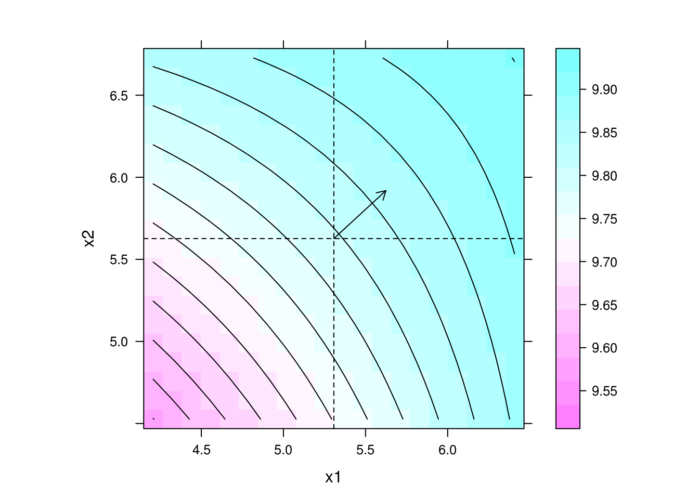
## Direção de maior inclinação
b4[2]/b4[1]
# x2
# 0.9215053
## Gráfico da superfície com direção de maior inclinação multiplicada
## por um fator 5
levelplot(y ~ x1 + x2, data = da, contour = TRUE, aspect = "iso") +
layer(panel.levelplot(x = pred$x1, y = pred$x2, z = pred$y,
subscripts = 1:length(pred$x1),
contour = TRUE,
col.regions = grey.colors)) +
layer(panel.rect(min(x1), min(x2), max(x1), max(x2)),
data = exp4) +
layer(panel.arrows(ct4[1],
ct4[2],
ct4[1] + 5 * b4[1],
ct4[2] + 5 * b4[2],
length = 0.1)) +
layer(panel.rect(min(x1), min(x2), max(x1), max(x2)),
data = exp3) +
layer(panel.arrows(ct3[1],
ct3[2],
ct3[1] + 10 * b3[1],
ct3[2] + 10 * b3[2],
length = 0.1)) +
layer(panel.rect(min(x1), min(x2), max(x1), max(x2)),
data = exp2) +
layer(panel.arrows(ct2[1],
ct2[2],
ct2[1] + 10 * b2[1],
ct2[2] + 10 * b2[2],
length = 0.1)) +
layer(panel.rect(min(x1), min(x2), max(x1), max(x2)),
data = exp1) +
layer(panel.arrows(ct1[1],
ct1[2],
ct1[1] + 10 * b1[1],
ct1[2] + 10 * b1[2],
length = 0.1))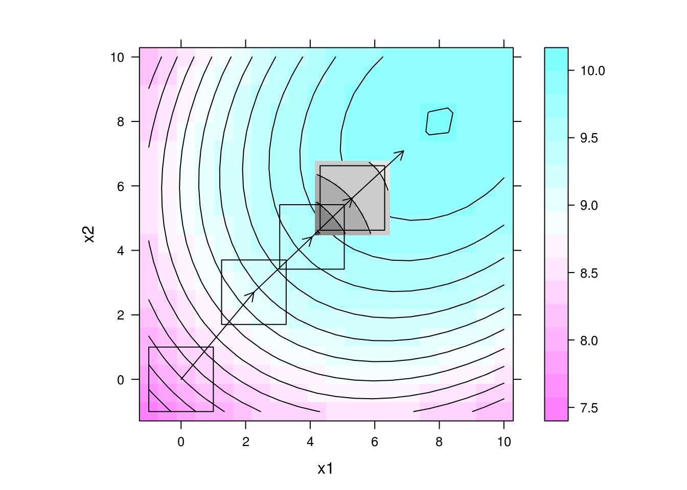
Experimento 5: Planejamento Composto Central
## Centro do novo plano
(ct5 <- ct4 + 5 * b4)
# x1 x2
# 6.892861 7.087862Os PCC são largamente usados na prática porque são relativamente eficientes com respeito ao número de corridas requeridas. Em geral, um PCC com \(k\) fatores requer:
- \(2^k\) pontos fatoriais ou de vértice
- \(2k\) pontos axiais ou estrela
- \(n_0\) pontos centrais (geralmente entre 3 e 5)
Portanto, para 2 fatores e apenas um ponto central (mínimo), teremos então \(2^2 + 2\cdot 2 + 1 = 9\) pontos no total.
A distância dos pontos axiais a partir do centro será dada por \(\alpha\). A escolha do valor de \(\alpha\) depende de vários fatores e de algumas propriedades de experimentos axiais. Por exemplo, um experimento composto central é chamado de rotacionável quando o desvio-padrão das predições for constante em todos os pontos que estiverem à mesma distância do centro do planejamento.
Portanto, para que o experimento seja rotacionável, o valor de \(\alpha\) deve ser \(\alpha = (F)^{1/4}\), onde \(F\) é o número de pontos na porção fatorial do planejamento (geralmente \(F = 2^k\)). Para \(k=2\), \(\alpha = (2^2)^{1/4} = 2^{1/2} = \sqrt{2} = 1.414\).
## Planejamento composto central
## Determinação dos pontos axiais: alpha = r = \sqrt{2}
r <- sqrt(2)
exp5 <- expand.grid(x1 = ct5[1] + c(-1, 1),
x2 = ct5[2] + c(-1, 1))
exp5 <- rbind(exp5,
data.frame(x1 = ct5[1] + c(r, -r, 0, 0),
x2 = ct5[2] + c(0, 0, r, -r)))
exp5 <- rbind(exp5, matrix(ct5,
byrow = TRUE,
nrow = 4,
ncol = 2,
dimnames = list(NULL, names(exp5))))
exp5$centro <- rep(1:2, c(nrow(exp5) - 4, 4))
## Veja como fica o planejamento com as variáveis codificadas
transform(exp5,
x1 = x1 - mean(x1),
x2 = x2 - mean(x2))
# x1 x2 centro
# 1 -1.000000 -1.000000 1
# 2 1.000000 -1.000000 1
# 3 -1.000000 1.000000 1
# 4 1.000000 1.000000 1
# 5 1.414214 0.000000 1
# 6 -1.414214 0.000000 1
# 7 0.000000 1.414214 1
# 8 0.000000 -1.414214 1
# 9 0.000000 0.000000 2
# 10 0.000000 0.000000 2
# 11 0.000000 0.000000 2
# 12 0.000000 0.000000 2
## Visualizando o planejamento.
xyplot(x1 ~ x2, data = exp5, aspect = "iso", pch = 19) +
layer(panel.segments(ct5[2] + c(-r, 0),
ct5[1] + c(0, -r),
ct5[2] + c(r, 0),
ct5[1] + c(0, r),
col = 1, lty = 2)) +
layer(panel.lines(ct5[2] + c(-1, 1, 1, -1, -1),
ct5[1] + c(-1, -1, 1, 1, -1),
col = 1, lty = 2))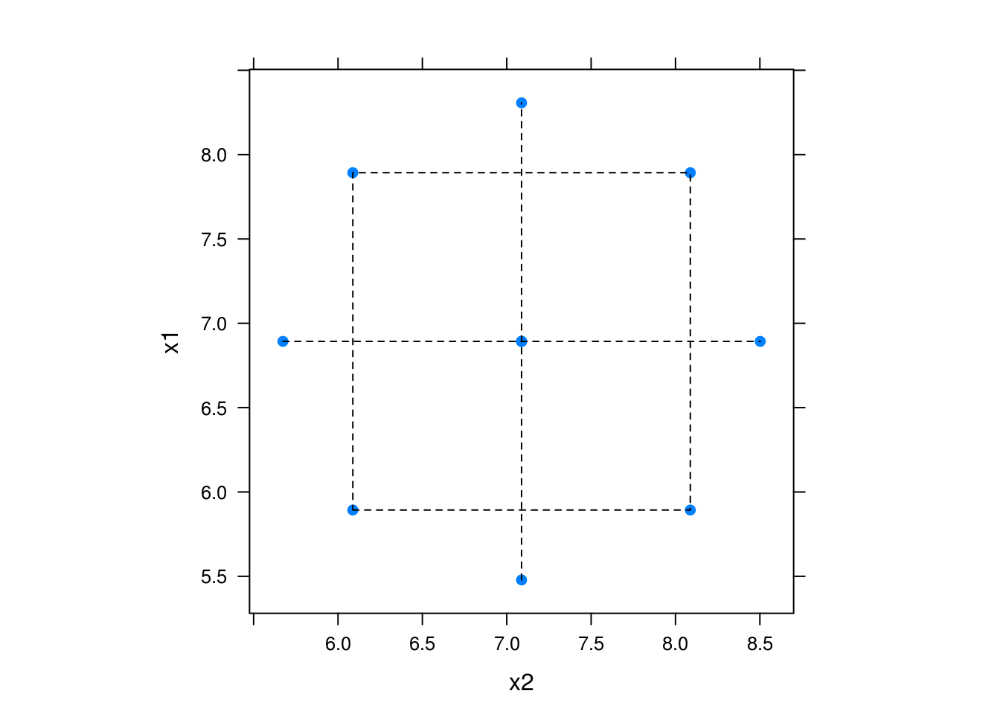
## Obtendo os resultados.
set.seed(301)
exp5$y <- with(exp5, erro(superficie(x1, x2)))
exp5
# x1 x2 centro y
# 1 5.892861 6.087862 1 9.890658
# 2 7.892861 6.087862 1 9.785834
# 3 5.892861 8.087862 1 9.923701
# 4 7.892861 8.087862 1 10.020797
# 5 8.307075 7.087862 1 9.970412
# 6 5.478647 7.087862 1 9.914139
# 7 6.892861 8.502075 1 9.964712
# 8 6.892861 5.673648 1 9.819282
# 9 6.892861 7.087862 2 9.963860
# 10 6.892861 7.087862 2 10.001931
# 11 6.892861 7.087862 2 10.069297
# 12 6.892861 7.087862 2 10.014213Com a inclusão dos pontos axiais, podemos agora ajustar um modelo de segunda ordem,
\[ y = \beta_0 + \sum_{j=1}^{k} \beta_{j} x_j + \mathop{\sum\sum}\limits_{i < j} \beta_{ij} x_i x_j + \sum_{j=1}^{k} \beta_{jj} x_{j}^{2} + \epsilon \]
onde \(\beta_{jj}\) representa efeitos quadráticos ou de segunda ordem. Este modelo também é chamado de superfície de resposta de segunda ordem.
## Ajustando o modelo de segunda ordem
m5 <- lm(y ~ x1 * x2 + I(x1^2) + I(x2^2), data = exp5)
anova(m5)
# Analysis of Variance Table
#
# Response: y
# Df Sum Sq Mean Sq F value Pr(>F)
# x1 1 0.0006454 0.0006454 0.5213 0.497435
# x2 1 0.0280458 0.0280458 22.6553 0.003127 **
# I(x1^2) 1 0.0042908 0.0042908 3.4661 0.111953
# I(x2^2) 1 0.0255116 0.0255116 20.6082 0.003935 **
# x1:x2 1 0.0101930 0.0101930 8.2339 0.028447 *
# Residuals 6 0.0074276 0.0012379
# ---
# Signif. codes: 0 '***' 0.001 '**' 0.01 '*' 0.05 '.' 0.1 ' ' 1
## Estimativa dos coeficientes
summary(m5)
#
# Call:
# lm(formula = y ~ x1 * x2 + I(x1^2) + I(x2^2), data = exp5)
#
# Residuals:
# Min 1Q Median 3Q Max
# -0.048466 -0.009716 -0.003949 0.013812 0.056972
#
# Coefficients:
# Estimate Std. Error t value Pr(>|t|)
# (Intercept) 7.01988 1.35402 5.184 0.00205 **
# x1 0.17500 0.22905 0.764 0.47381
# x2 0.60626 0.23179 2.616 0.03983 *
# I(x1^2) -0.03800 0.01391 -2.732 0.03409 *
# I(x2^2) -0.06314 0.01391 -4.540 0.00393 **
# x1:x2 0.05048 0.01759 2.869 0.02845 *
# ---
# Signif. codes: 0 '***' 0.001 '**' 0.01 '*' 0.05 '.' 0.1 ' ' 1
#
# Residual standard error: 0.03518 on 6 degrees of freedom
# Multiple R-squared: 0.9024, Adjusted R-squared: 0.8211
# F-statistic: 11.1 on 5 and 6 DF, p-value: 0.005442
## Predição
pred <- with(exp5,
expand.grid(x1 = eseq(x1),
x2 = eseq(x2)))
pred$y <- predict(m5, newdata = pred)
## Gráfico da predição com indicação do ponto estacionário
levelplot(y ~ x1 + x2, data = pred, contour = TRUE, aspect = "iso") +
layer(panel.points(8, 8, pch = 19, col = "red"))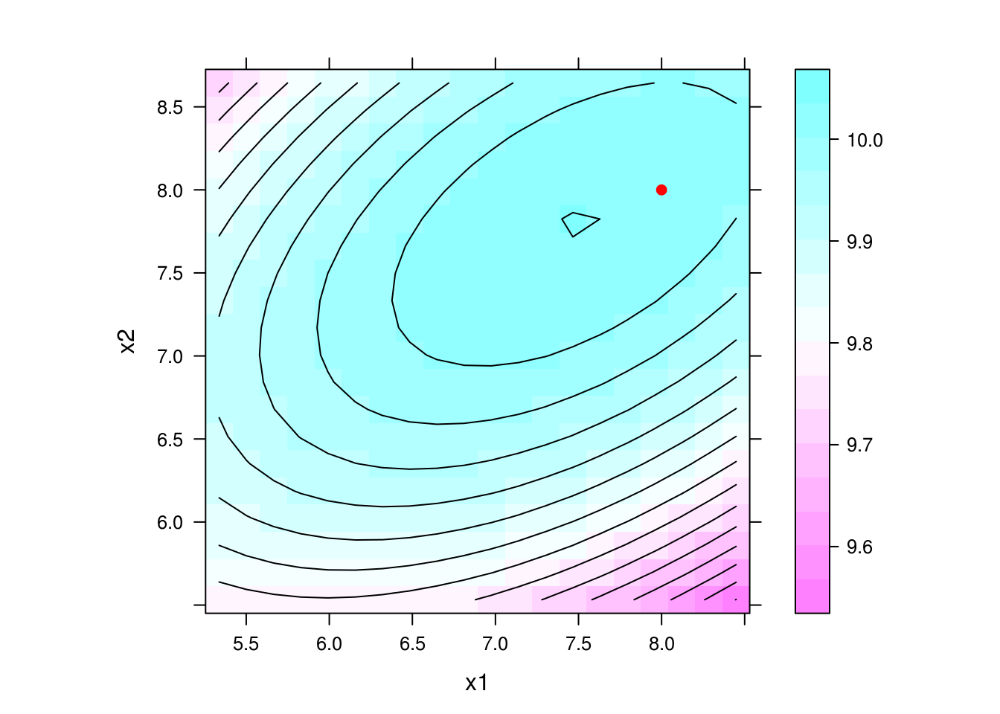
## Gráfico da superfície com todos os experimentos e pontos fatoriais,
## centrais e axiais
levelplot(y ~ x1 + x2, data = da, contour = TRUE, aspect = "iso") +
layer(panel.levelplot(x = pred$x1, y = pred$x2, z = pred$y,
subscripts = 1:length(pred$x1),
contour = TRUE,
col.regions = grey.colors)) +
layer(panel.points(x1, x2),
data = exp5) +
layer(panel.points(x1, x2),
data = exp4) +
layer(panel.points(x1, x2),
data = exp3) +
layer(panel.points(x1, x2),
data = exp2) +
layer(panel.points(x1, x2),
data = exp1) +
layer(panel.rect(min(x1), min(x2), max(x1), max(x2)),
data = exp4) +
layer(panel.arrows(ct4[1],
ct4[2],
ct4[1] + 5 * b4[1],
ct4[2] + 5 * b4[2],
length = 0.1)) +
layer(panel.rect(min(x1), min(x2), max(x1), max(x2)),
data = exp3) +
layer(panel.arrows(ct3[1],
ct3[2],
ct3[1] + 10 * b3[1],
ct3[2] + 10 * b3[2],
length = 0.1)) +
layer(panel.rect(min(x1), min(x2), max(x1), max(x2)),
data = exp2) +
layer(panel.arrows(ct2[1],
ct2[2],
ct2[1] + 10 * b2[1],
ct2[2] + 10 * b2[2],
length = 0.1)) +
layer(panel.rect(min(x1), min(x2), max(x1), max(x2)),
data = exp1) +
layer(panel.arrows(ct1[1],
ct1[2],
ct1[1] + 10 * b1[1],
ct1[2] + 10 * b1[2],
length = 0.1))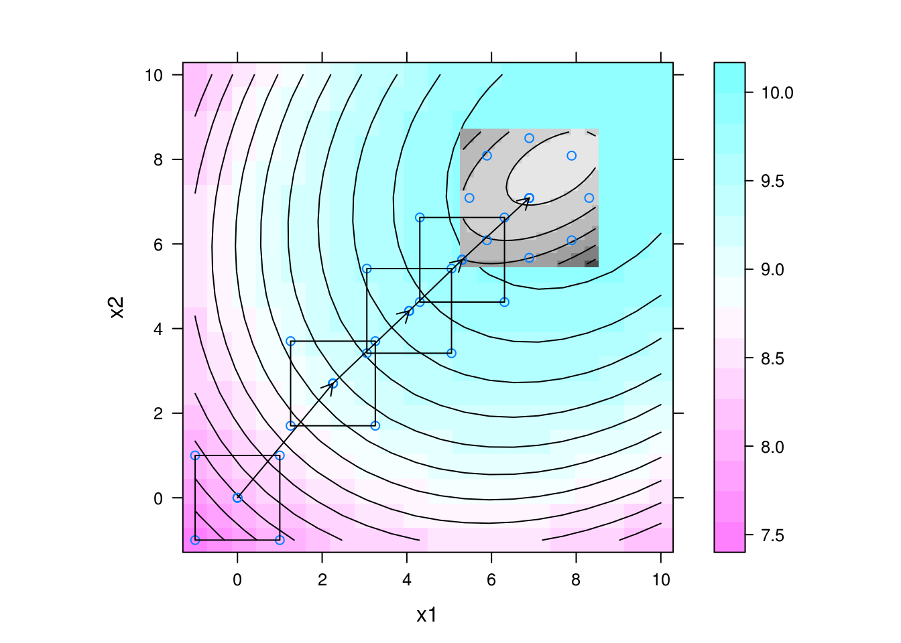

Este conteúdo está disponível por meio da Licença Creative Commons 4.0